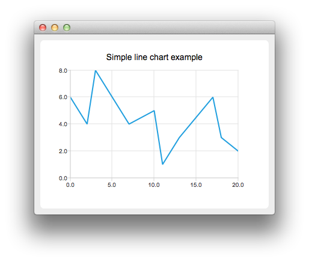

Creating Line Charts
Note: This is part of the Charts with Widgets Gallery example.

To create a line chart, a QLineSeries instance is needed. Let's create one.
auto series = new QLineSeries;
Then we add data to the series. We can use the append() member function or use the stream operator.
series->append(0, 6); series->append(2, 4); series->append(3, 8); series->append(7, 4); series->append(10, 5); *series << QPointF(11, 1) << QPointF(13, 3) << QPointF(17, 6) << QPointF(18, 3) << QPointF(20, 2);
To present the data on the chart we need a QChart instance. We add the series to it, create the default axes, and set the title of the chart.
auto chart = new QChart; chart->legend()->hide(); chart->addSeries(series); chart->createDefaultAxes(); chart->setTitle("Simple Line Chart");
Then we create a QChartView object with QChart as a parameter. This way we don't need to create a QGraphicsView scene ourselves.
createDefaultChartView(chart);
The chart is ready to be shown.